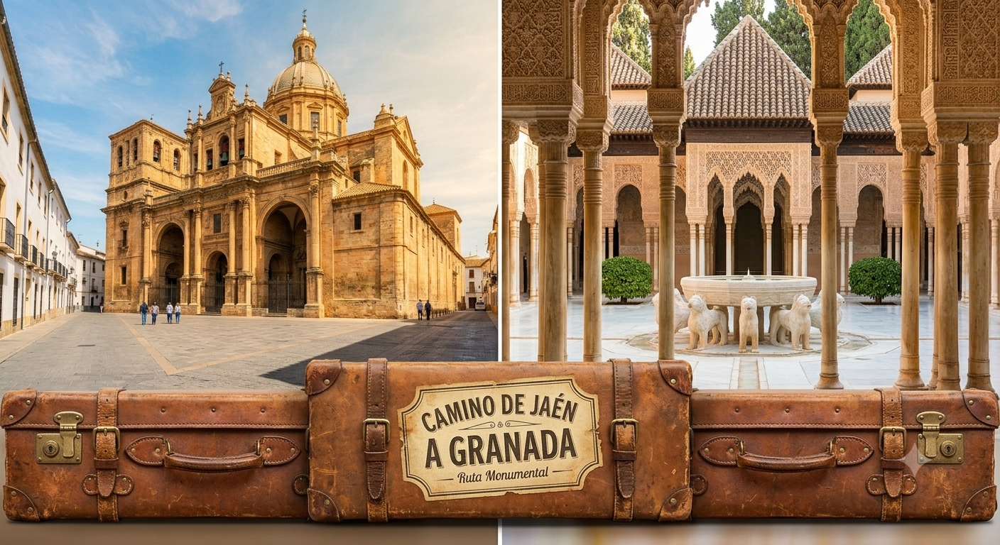
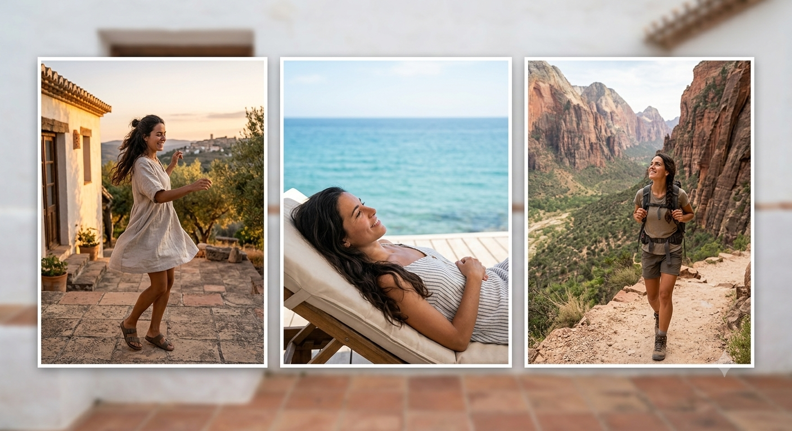
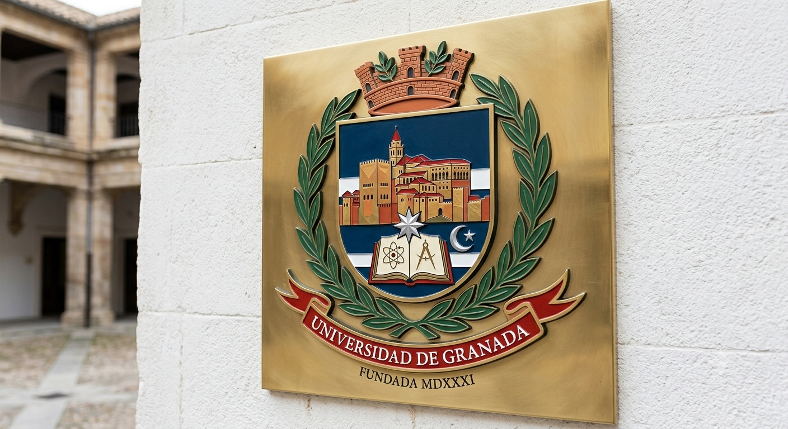
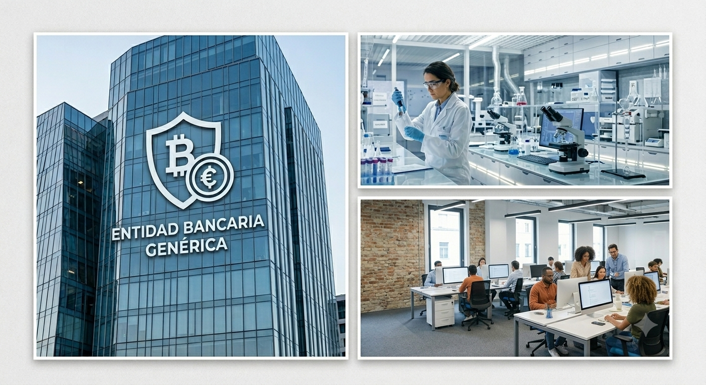

Mis orígenes
Hola!!!! Esta es la historia de una jovenzuela, que ha dado unos pocos bandazos a lo largo de su vida..... Me llamo Mª José y así empieza mi historia...
Nací en la ciudad de Jaén y estuve allí hasta los 18 años que me vine a Granada para comenzar mis estudios universitarios. Desde entonces, vivo en Granada aunque parte de mi familia sigue viviendo en Jaén. Asi que andamos todos de alla para acá.

Hobbies
Me encanta hacer cosas al aire libre, pasear por el campo, relajarme oyendo las olas del mar, escuchar música a todo volumen mientras bailo...

Estudios
Estudié Ciencias Químicas en la Universidad de Granada pero enseguida me dí cuenta que no me convencía mucho la decisión tomada.

Con el tiempo, tuve que empezar a formarme en temas administrativos, tales como realización de facturas, nóminas, pedidos, albaranes.... volviendo a reinterpretarme. Es decir, todo tipo de papeleos para poder llevar la parte administrativa de una empresa
¡También tengo un Certificado de profesionalidad y estoy a punto de finalizar el segundo!
Trayectoria
En el último año de carrera, estuve haciendo prácticas en un laboratorio, y ahí me dí cuenta, que eso no era lo mío....me había equivocado.
Comencé por casualidad en le mundo de la banca y estuve más de 10 años en el sector.
Pasé por diferentes empresas llevando la administración y secretariado en un amplio abanico de sectores, como el inmobiliario, la educación, el medio audiovusual....

Continuará.....